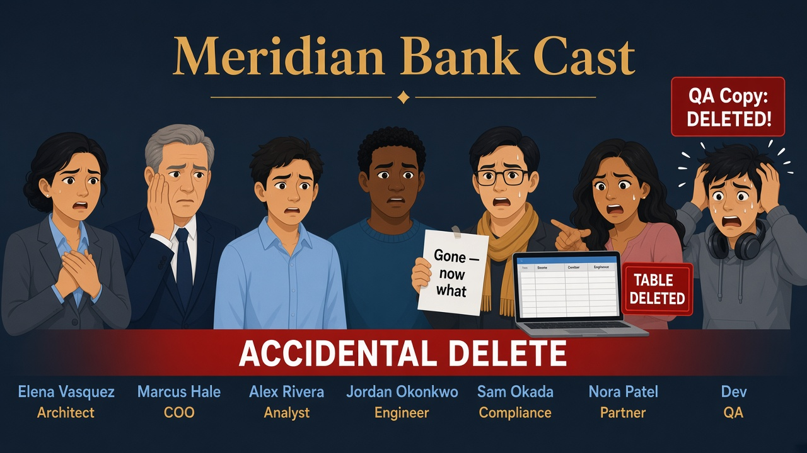
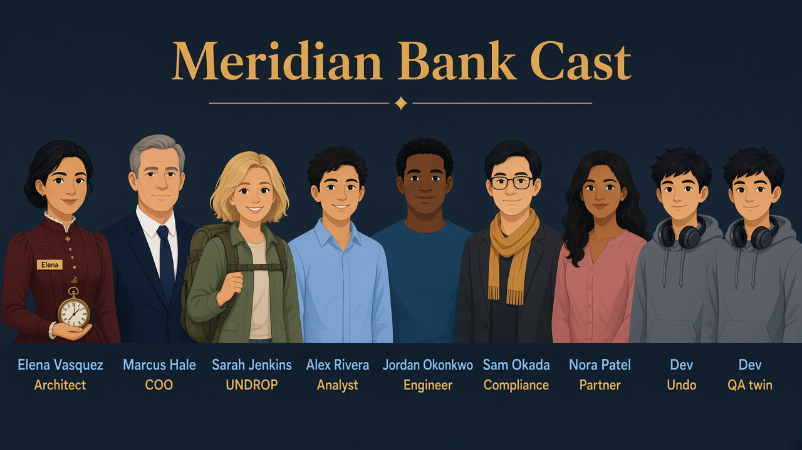
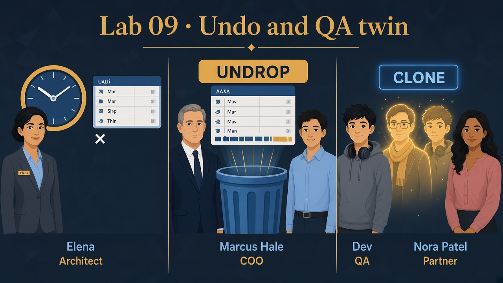

Someone dropped a table — and Dev needs prod-like data
Read Teach first before the demos.
Three small stories: recover a deleted row with Time Travel, resurrect a dropped table with UNDROP,
give Dev a zero-copy clone for QA — and know what is not geo-disaster recovery.
Business problem
An engineer deleted SILVER_CURATED demo data after a bad migration. Separately, Dev (QA) wants prod-like tables every sprint without paying double storage on day one.
Solution you will run
Query past versions with AT / OFFSET, UNDROP a table, then CREATE TABLE … CLONE for Dev’s sandbox copy.

Before
Accidental delete panic — data “gone.”

After
Time Travel / UNDROP / clone — undo + Dev QA fork.
Episode 09 · Undo
Four tools — don’t mix them up
DevQA — needs a safe copy
I need a prod-like copy to break safely.
ElenaArchitect — explains why
CLONE = twin in the same account. Time Travel = yesterday’s rows while table still exists. UNDROP = bring back a dropped table. Replication = other region when the building burns — Lab 11.
Clone ≠ disaster recovery. Say it until it’s boring.
See it — don’t memorize definitions
Three different “undo” tools — pick by what broke.
Rows changed
Time Travel SELECT
Table still exists — read an older version.
AT (OFFSET => -120) deleted row reappears in result
Table dropped
UNDROP
Whole object vanished — restore inside retention.
DROP TABLE … UNDROP TABLE …
Dev QA
CREATE … CLONE
Zero-copy twin — edits on clone don’t touch prod.
TT_DEMO2_CLONE same account sandbox
Not this lab
Replication · fail-safe
Region failover — Lab 11. Fail-safe = support-only tape.
geo-DR ≠ clone

Picture · Undo + twin
Time Travel / UNDROP / Dev’s CLONE for QA — not geo-DR (Lab 11 covers replication/fail-safe depth).
Three tools — don’t mix them up
Time TravelRow still “there” in historySELECT AT … after DELETE/UPDATE
CLONEDev needs a forkSame data snapshot · QA writes don’t touch prod
Friday PM · QA lane
Dev runs tests on WH_BANK_XS against a clone while prod keeps serving Marcus.
Clone is same-account fast fork — not geo-DR. Fail-safe is last-resort retention after Time Travel expires.
1
Set session
Step 1 · coach
Session
ElenaArchitect — explains why
Badge, engine, silver room — let’s break a tiny demo table on purpose.
SQL · context
USE ROLE ROLE_BANK_LAB_ADMIN;
USE WAREHOUSE WH_BANK_XS;
USE DATABASE MERIDIAN_BANK;
USE SCHEMA SILVER_CURATED;
2
Demo A — Time Travel after DELETE
Step 2 · coach
Time Travel after DELETE
AlexAnalyst — still learning
I deleted the row — it’s gone forever?
ElenaArchitect — explains why
Not yet. Ask Snowflake for the table as of a few minutes ago. That’s Time Travel. The trash didn’t leave the building immediately.
What this does
Create tiny table, mutate it, delete the row, then SELECT with AT (OFFSET => -60*2) (~2 minutes back) to see the row again.
What you should see
Current table empty (or no row 1); time-travel query shows NOTE = 'after' or earlier state depending on timing — proves history exists.
SQL · build TT_DEMO
CREATE OR REPLACE TABLE TT_DEMO (ID NUMBER, NOTE STRING);
INSERT INTO TT_DEMO VALUES (1, 'before');
UPDATE TT_DEMO SET NOTE = 'after' WHERE ID = 1;
DELETE FROM TT_DEMO WHERE ID = 1;
SQL · rewind ~2 minutes
SELECT * FROM TT_DEMO AT (OFFSET => -60*2);
✓ At least one historical row visible — interview: “restore via INSERT…SELECT from AT”
3
Demo B — UNDROP after DROP TABLE
Step 3 · coach
UNDROP
JordanEngineer — builds pipelines
I DROP TABLE by mistake…
ElenaArchitect — explains why
UNDROP is the “retrieve from dumpster” for whole tables — if you’re still inside retention. Different tool than Time Travel on a table that’s still there.
What this does
Second table, one row, drop it, then UNDROP TABLE while retention allows.
What you should see
SELECT * FROM TT_DEMO2 returns keep me again.
SQL · drop then undrop
CREATE OR REPLACE TABLE TT_DEMO2 (ID NUMBER, NOTE STRING);
INSERT INTO TT_DEMO2 VALUES (1, 'keep me');
DROP TABLE TT_DEMO2;
UNDROP TABLE TT_DEMO2;
SQL · proof
SELECT * FROM TT_DEMO2;
✓ Table and row back — object restored, not just one row
4
Demo C — zero-copy CLONE for Dev
Step 4 · coach
CLONE for Dev
DevQA — needs a safe copy
Is clone our DR plan?
MarcusCOO — business pressure
No.
ElenaArchitect — explains why
Clone = Dev’s playground today. DR = other region + failover — different lab.
What this does
CREATE TABLE TT_DEMO_CLONE CLONE TT_DEMO2 — Dev gets identical data; storage shared until clone diverges.
What you should see
Clone returns same row as source. Dev can refresh QA by re-cloning on a schedule.
SQL · clone
CREATE OR REPLACE TABLE TT_DEMO_CLONE CLONE TT_DEMO2;
SELECT * FROM TT_DEMO_CLONE;
SQL · status
SELECT 'Lab 09 Time Travel / UNDROP / CLONE OK' AS status;
✓ Status row · parity with sql/09_timetravel_clone.sql
Interviewer presses further — say these out loud
Basics got you into the room. Cover each answer before you open it.
If you blank here, an Architect + dbt interviewer will know.
Q1. Time Travel vs UNDROP vs CLONE vs replication — one wrong-tool story each.
Say: TT: table exists, need yesterday’s rows. UNDROP: someone DROP TABLE. CLONE: Dev’s same-account QA fork. Replication: region/account loss. Using clone as DR, or TT as geo-failover, is the classic fail.
Q2. Retention failure mode nobody mentions until prod?
Say: Temporary/transient tables and short DATA_RETENTION_TIME_IN_DAYS shrink UNDROP/TT windows. Fail-safe isn’t self-serve. Set retention deliberately on SILVER/GOLD; don’t promise 90-day undo on a 1-day default.
Q3. Zero-copy clone — when does storage cost show up?
Say: Day one shares micro-partitions; Dev writes and prod churn diverge and bill growth. Clone isn’t free forever, and isn’t cross-account for Nora. QA speed — not partner delivery or DR.
Q4. AT (OFFSET => …) after a bad UPDATE — why not always UNDROP?
Say: UNDROP restores a dropped object; a bad UPDATE leaves the table up. Point-in-time SELECT or CTAS … AT restores the good version. Pick the tool by what broke.
Q5. Trial vs Enterprise Time Travel depths — what do you say?
Say: Max retention depends on edition — confirm before promising 90-day TT. Architecture answer is retention policy + tested restore runbook, not a number from a blog.
Elena’s wrap-up (say this out loud)
“Meridian had operator panic and QA freshness needs.
I recovered deleted history with Time Travel AT OFFSET, put a dropped table back with UNDROP, and gave Dev a zero-copy CLONE of TT_DEMO2 for sprint testing.
Fail-safe and cross-region replication are the longer DR story — not what Dev’s same-account clone replaces.
Outcome: minutes to recover mistakes; QA without duplicating full storage on day one.”